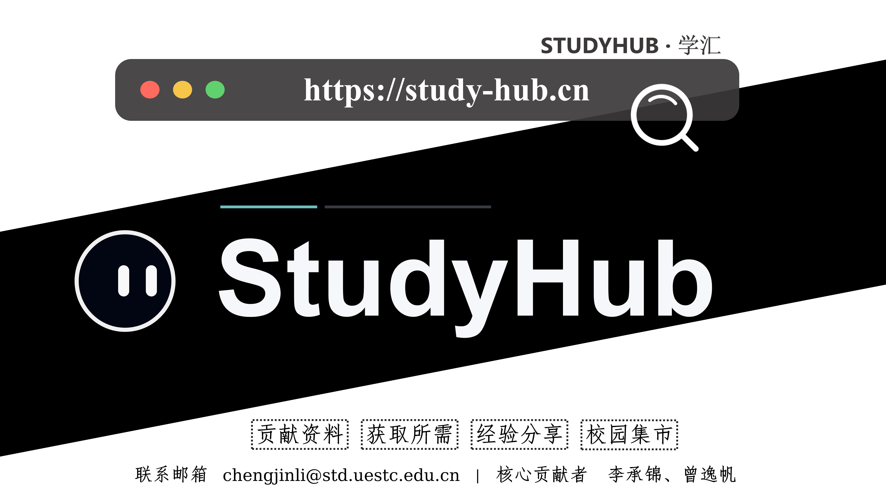

01
StudyHub
Next.jsFastAPIMySQLRedisMCPvLLMDocker
主导 StudyHub 校园知识共享平台的架构、核心开发与运营，服务资料共享与 AI 学习；在全栈业务之上集成 RAG、增量 Wiki、Agent 问答、多模态审核与 Monitor–Muse–Codex 自动化运维。
~400用户
~2,000下载
展开技术细节 收起技术细节
- 职责与协作：提出项目构想并主导产品架构与前后端核心功能开发，负责权限与资料管理、部署运维、开源协作与 PR 审核；结合 Codex 和 Claude Code 辅助开发测试。
- AI 自动化运维：设计 Monitor–Muse–Codex 协同机制：Monitor 监测服务与关键接口、流量和服务器资源异常，通过邮件预警提供运行信息；Muse 结合告警与日志分析原因，按问题类型协调 Codex 进行代码修复、测试与恢复验证。
- RAG 检索管线：采用结构感知切分与 Parent-Child 分层索引，结合 BM25、BGE-M3 向量召回、RRF 融合及 Qwen3-Reranker-0.6B 重排；SciFact 评测中，Hit@5 从 87.5% 提升至 96.9%，MRR@5 从 0.828 提升至 0.932。
- Wiki 知识聚合与更新：以 Map–Reduce 实现跨文档实体及概念聚合，设计 Chunk 级抽取结果缓存、来源追溯和失效知识撤回机制，支持增量构建与更新。
- Agent Harness：基于 Qwen3.5-9B 构建多步工具调用框架，支持面向任务复杂度的 ReAct / Plan-and-Execute 策略选择、参数与引用校验、异常纠错、上下文压缩和执行预算管理；规定来源引用覆盖通过率由 12.5% 提升至 91.7%，上下文预算异常终止降至 0 次。
- 模型后训练：面向 Tool Calling，基于 LoRA 开展 SFT 与 GRPO 后训练和对照评测；工具调用成功率由 87.5% 提升至 93.8%。
- 多模态内容审核：基于 Qwen3Guard-Gen-0.6B、ShieldGemma 2-4B 和 OCR 构建文本与图像审核流程，通过候选类别概率和 0.85 置信度阈值分流至自动处理或人工复核；XSTest 文本离线评测自动处理覆盖率为 73.4%。
